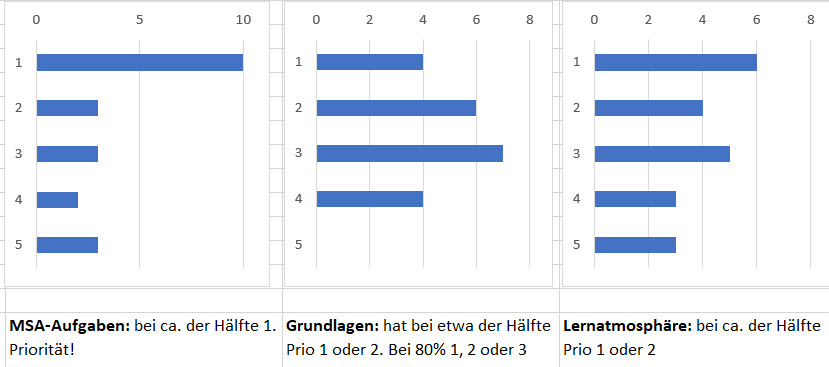
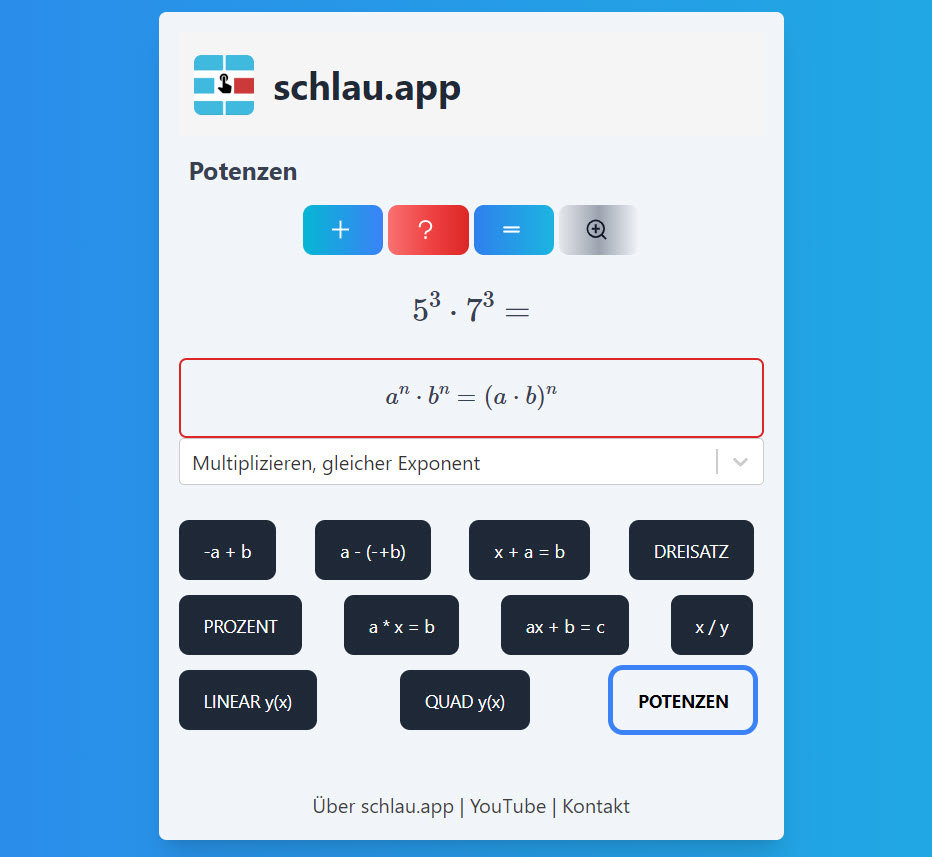

Prüfungsvorbereitung Mathematik in der Mittelstufe
Wie du mit der Mathe-App schlau.app richtig Mathe lernst, um die Prüfungen für BBR, MSA, Realschulabschluss ohne Stress zu schaffen. (Lesezeit 6 Minuten)
Du willst in Mathe auf Nummer sicher gehen? Schriftliche Prüfungen in diesem Schuljahr sicher schaffen? In Mathe sorgenfrei werden und ein richtig cooles Erfolgs-Schuljahr hinlegen? Dann lies diese Seite. Hier geht es genau um deinen Erfolg in Mathe.
Die Mathe-App schlau.app, zusammen mit den Tipps auf dieser Seite, zeigt dir (so kurz wie noch nie, echt), wie du vorgehst, um Mathe-Sorgen weg zu kriegen. Wie du aus Mathe-Problemen Mathe-Erlebnisse machst. Und aus Mathe-Erlebnissen Mathe-Erfolge!
Du hast es selbst in der Hand! Hier lernst du in wenigen Minuten, wie es geht. Indem du es machst! Lehrbücher hast du schon - hier kommt die Praxis! Less Lectures, more Doing. Und im Doing, im profimäßigen Trainieren wirst du immer besser, versprochen! Denk dran: im Gym must du auch erstmal anfangen und dann wirst du im Trainieren immer besser, baust immer mehr Kraft auf. Und hier ist das Fitness-Center für Mathe.
Dein Ziel: BBR, MSA & Co. schaffen!
In der Mittelstufe verpuffen viele Mathestunden ohne echtes Ergebnis. Das liegt zum Teil am Alter, Pubertät etc. Wenn du aber vor den Prüfungen stehst, kannst du dir das nicht mehr leisten! Was musst du wirklich tun, um das Ziel BBR oder MSA in Mathe zu erreichen?
- Du musst die BBR- und MSA-Aufgaben wirklich trainieren, rechtzeitig!
- Du musst die Grundlagen sichern, sonst bringt die fleißigste Arbeit nichts!
- Du brauchst eine produktive Arbeitsumgebung, Konzentration und die richtige Arbeitshaltung.
Hier ist das Ergebnis einer Umfrage im 9. Jahrgang: was braucht es für Erfolg im Mathe?

Die Schüler*innen haben mit großer Mehrheit genau für diese Punkte gestimmt: Aufgaben üben, Grundlagen, Arbeitsatmosphäre!
Trainieren ist angesagt!
Was ist aber jetzt der Weg zum Ziel? In Mathe reicht es nicht, wenn du die Themen "verstehst". Denn das, was du "eigentlich" verstanden hast, kannst du noch lange nicht sicher umsetzen - in Klassenarbeiten, in den Prüfungen zu BBR und MSA. In Mathe zählt nicht nur "Wissen", es muss auch "Können" da sein. Und das geht nur durch Übung. Geübt wird im Unterricht oder zu Hause. Mit der Mathe-App schlau.app hast du weitere Übemöglichkeiten: im Unterricht, zu Hause und unterwegs. Und das Schöne ist: du hast dein Üben buchstäblich "in der Hand". Du übst am Handy oder am PC genau das, bei dem du dich steigern willst.

Jeder trainiert anders!
Die Mathe-App schlau.app bietet ein optimales Mathe-Erlebnis für alle Schüler*innen. Aber: je nachdem, wie fit jemand schon bist, profitiert sie/er unterschiedlich von diesem Training (das ist auch wieder so wie im Fitness-Center). Beispiele
- Wenn du immer wieder kämpfen musst, um die 4 zu schaffen, dann fehlen dir meistens Grundlagen (es liegt also meist nicht daran, dass dir ein bestimmtes Thema "nicht liegt" oder "zu schwer" ist. Sondern: weil die Basis fehlt, hast du es nicht sicher lernen können. Andere Möglichkeit: du konzentrierst dich nicht genug. Beides kannst du hier lernen: die Grundlagen und das Konzentrieren. Fang mit dem Konzentrieren gleich an und verstehe diese Einleitung komplett.
- Wenn du auf der 3 stehst, aber mehr möchtest, dann vervollständigst du mit dem schlau.app-Mathelernen deine Tools und Lücken bei den Grundlagen. Achtung: auf dem Niveau 3 musst du aber die Lehrplanthemen wirklich durchmachen. schlau.app enthält einige Lehrplan-Themen (wie lineare und quadratische Funktionen). Also: diese üben und die Grundlagen - alles mit schlau.app!
- Wenn du auf 2 oder 1 stehst, bist du bereits versiert darin, Mathethemen zu lernen und Grundlagen frisch zu halten. schlau.app kann dir bei beidem helfen, dein Niveau zu sichern.
Bevor du mit schlau.app anfängst und von wunderbaren Erfolgen träumst, solltest du dir ein paar Sachen bezüglich "Lernen" klarmachen. (Und die gelten auch für andere Mathe-Apps und für andere Medien wie YouTube oder Bücher genauso!)
- Konzentriere dich auf das Thema, nicht an andere Sachen denken. Wenn du denkst "noch eine halbe Stunde", dann bist du schon raus aus dem Thema. Wenn du denkst "der hat mich beleidigt", genauso. Trainiere lieber kürzer, aber mit voller innerer Power!
- Gib deinen Arbeitsthemen Namen. Nicht "ich mache jetzt diese Aufgaben", sondern z.B. "ich lerne jetzt, Terme umzustellen. Ich löse die Gleichungen nach x auf". Sprache hilft!
- Mache Aufgaben schriftlich und schreibe Aufgabenstellungen hin. Und Zwischenschritte! Deine Klassenarbeiten und BBR/MSA-Prüfungen sind auch schriftlich, oder?
So machst du "schlau" Mathe, es ist eigentlich genz einfach
Jedes Mathe-Tool ist nur so gut, wie du es einsetzt. Richtig eingesetzt, bringt dir die App viele Vorteile:
- Du kannst nach deiner Zeiteinteilung arbeiten!
- Du kannst in deinem Arbeitstempo arbeiten!
- Du kannst genau mit den Themen arbeiten, die für dich gerade wichtig sind!
- schlau.app lässt sich sogar in den Klassenunterricht in Mathe prima einbauen

Im Mathematikunterricht können innerhalb einer Lerngruppe z.B. je 2-3 Schüler*innen an einem Aufgabentyp arbeiten. Während die einen echte Themen trainieren wie lineare oder quadratische Funktionen, können andere, die noch in Grundlagen sicherer werden wollen, sich mit Basics wie Terme unstellen oder Addieren/Subtrahieren mit positiven und negativen Zahlen beschäftigen.
Die Freiheit mit individuellem Aufgabentyp und eigener Zeiteinteilung wissen Schüler*innen zu schätzen und "Handy im Unterricht" ist keine Ablenkung, sondern bringt alle weiter.
Dein Lehrer als Coach kann darauf achten, dass alle Teilnehmer "im Arbeitspunkt" arbeiten, also Aufgaben bearbeiten, die gerade die richtige Challenge darstellen. Denn das ist besonders wichtig: die Stifte müssen sich zügig und gleichmäßig über das Papier bewegen. Also: nicht zu leicht und nicht zu schwer. Mit der App lässt sich das in der Klasse viel leichter realisieren, als mit Arbeitsblättern, die individuell verteilt werden.
Das alles funktioniert so gut, weil schlau.app die Anforderungen und Probleme kennt, die App wurde aus der Praxis für die Praxis im Unterricht entwickelt.
Oft übersehen: dein wichtigster Lerncoach bist zu selbst!
Wenn du mit schlau.app erfolgreich sein willst, brauchst du eine eigenverantwortliche Einstellen. Z.B. bietet dir die App jede Freiheit, Aufgaben allein zu lösen oder Hilfe in Anspruch zu nehmen. Es gibt 4 Buttons:
- + Neue Aufgabe
- ? Hilfe
- = Lösung
- 👓 "Explainer"
Du kannst also selbst entscheiden, ob du dir gleich beim Anblick einer neuen Aufgabe helfen lassen willst, oder, ob du es erstmal selbst versuchst. Diese Freiheit hast du im Klassenunterricht meist nicht. Zusätzlich zum Hilfe-Button gibt es den Button rechts, den "Explainer". Hier bekommst du, je nach Aufgabentyp, weitergehende praktische Hilfe oder auch eine Hintergrundinfo.
Bei Aufgaben, die du gut kannst, könnte es deine Strategie sein, schnell zur Lösung zu kommen und trotzdem mal im Explainer nachzusehen.
Bei mehrschrittigen Aufgaben, die dir noch schwer fallen, könntest du erstmal nur immer den ersten Schritt machen und mit dem Hilfe-Button überprüfen.

Nicht zuletzt: Spaß und echter Lerngewinn
Auch wenn es dein erstes Ziel ist, die schriftlichen Prüfungen für die BBR und den MSA zu schaffen: denk daran, dass du nicht nur für die Schule lernst!
Der Mathestoff in der Mittelstufe wird in sehr vielen Ausbildungsgängen und, nicht zuletzt, im Alltag wirklich gebraucht. Z.B. ist das Wissen um Anteile und Prozent oft wichtig, um Medienartikel und Nachrichten überhaupt zu verstehen. Es fühlt sich nicht besonders cool an, immer dann, wenn von Prozent die Rede ist, sicherheitshalber den Mund zu halten. Und im Gegenteil: wenn du hier und da besser mitreden kannst bekommst du mehr Respekt und wirst auch mal um Rat gefragt.
Um den Einsatz von Mathe bei allen möglichen Themen deutlich zu machen, sind bei schlau.app aktuelle Sachfragen eingebaut, z.B. zu Bevölkerungsanteilen in der EU oder zu Energie und Umwelt - weitere werden folgen.